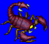
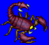
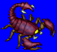
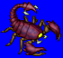

Height: 2 cm - 2 meters Weight: < 1 lb. - 350 lbs.
Habitat: Jungle, desert Origin: Tropical areas
Meaning: ???
Scorpions are arthropods with four to eight support legs and one or two scissors-claws to catch prey. It also has a tail with needles capable of paralyzing or killing its victim. Almost all scorpions have some sort of poison, but the most deadly are certain kinds found in Africa and Mexico. Most of the scorpions living in Japan are nocturnal and eat insects. The scorpion represented in RPGs is typically large and has a paralysis attack.